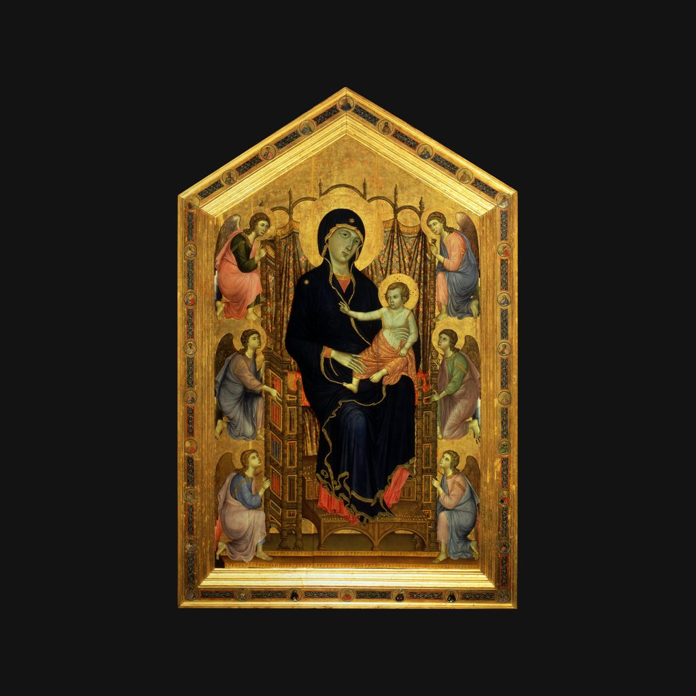

魯切拉聖母
杜喬 · 約1285年
Madonna Rucellai
導賞節錄
六位天使跪喺度，托住一張雕花木寶座，張寶座好似浮喺半空咁。坐喺上面嘅聖母，就好似忽然出現喺信眾面前。
呢幅係《魯切拉聖母》，由錫耶納畫家杜喬·迪·波尼賽尼亞大約喺一二八五年畫成，用蛋彩畫喺木板上面，鋪住金底，有四米半高。呢幅係佢留傳落嚟比較早期嘅作品，比佢為錫耶納主教座堂畫嘅《莊嚴聖母》早二十幾年。
— 廣東話講稿 · Artvery
完整講解約 3 分鐘，可在 Artvery App 收聽。粵語、台灣國語、內地普通話三種語音，館內對準作品即可識別播放。
即將登陸 App Store
App 即將推出，敬請期待。推出後免費下載，每座博物館單獨購買，一次購買永久使用。
作品資料
- 作者
- 杜喬
- 年代
- 約1285年
- 尺寸
- 450 × 290 厘米
- 位置
- 烏菲茲美術館 · 中世紀與早期文藝復興展廳
烏菲茲美術館參觀攻略：必看名作和路線 · 烏菲茲美術館廣東話語音導賞